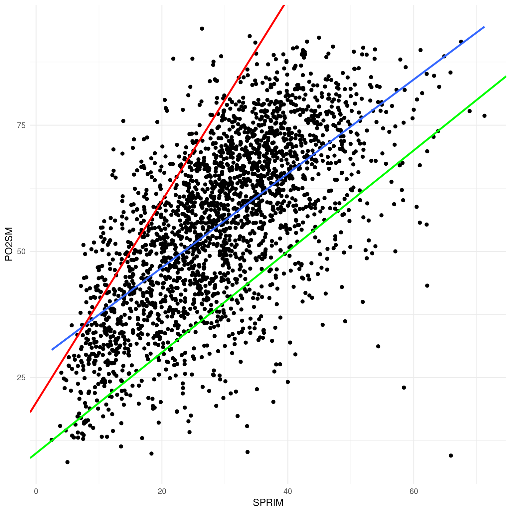
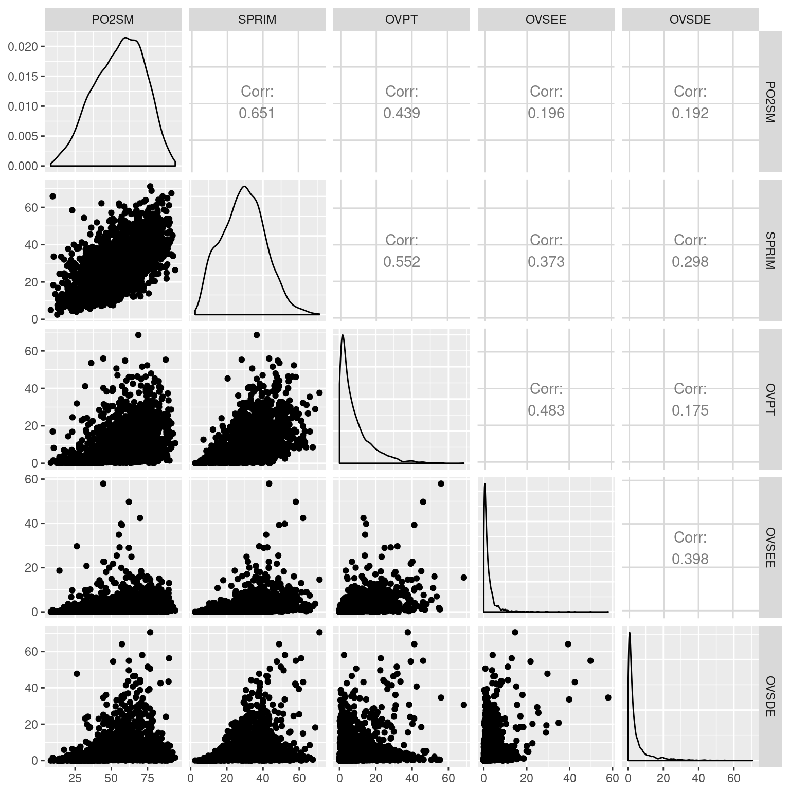
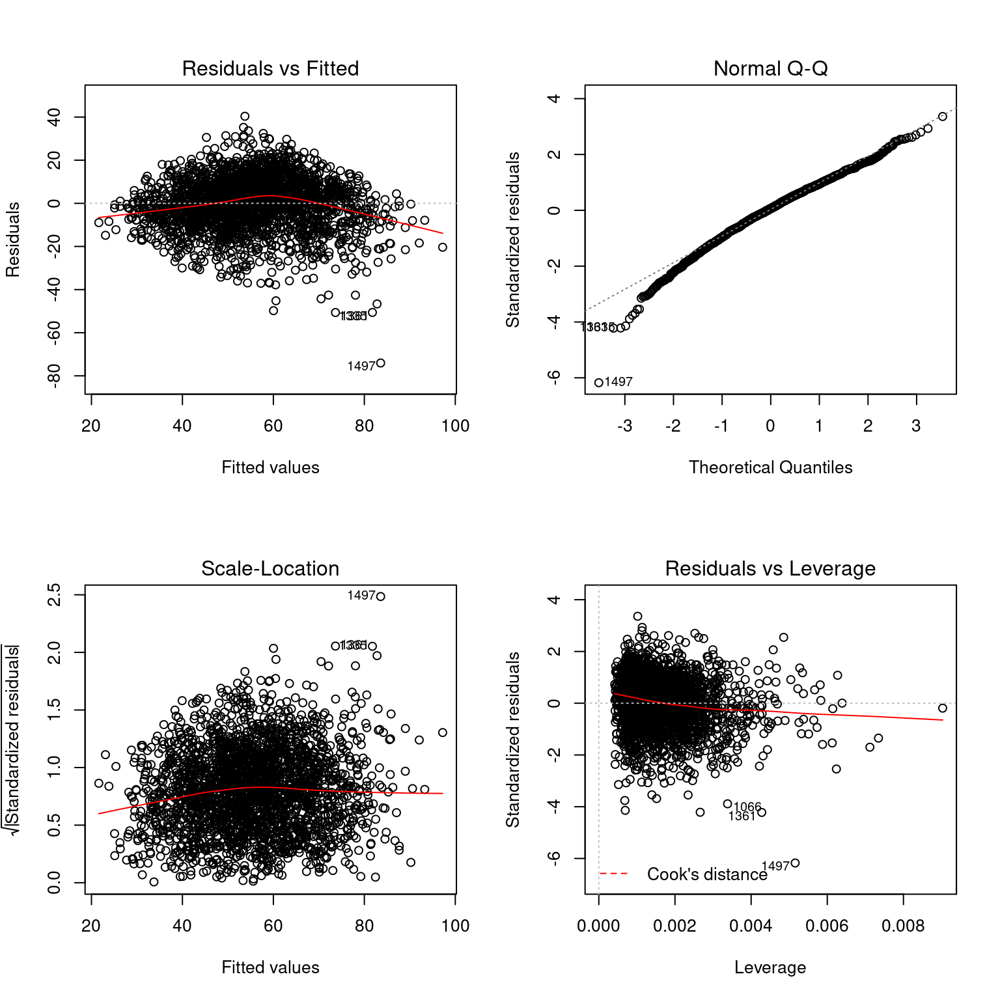
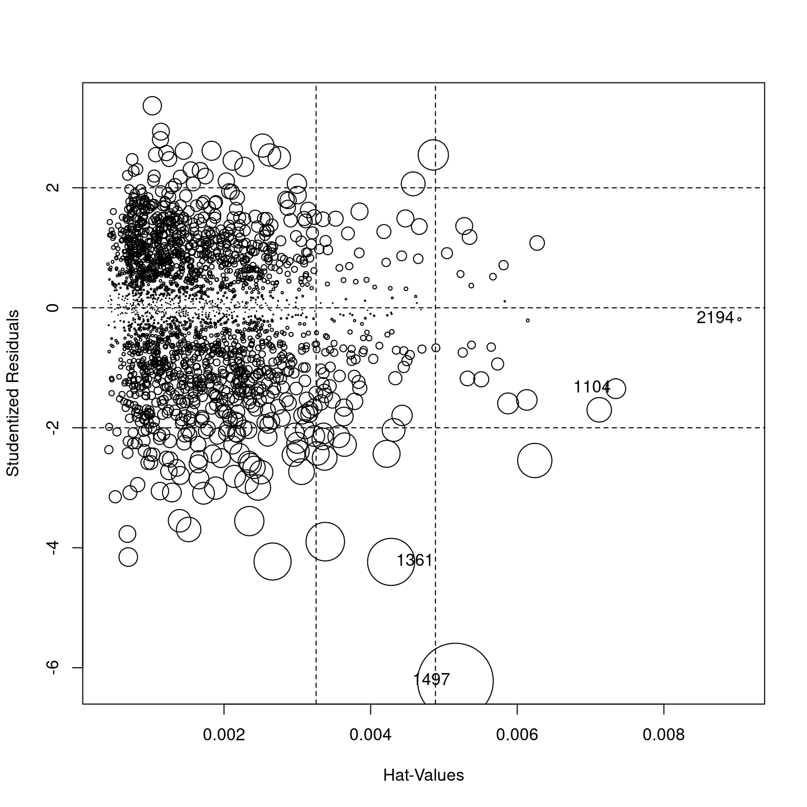

Capítulo 6 Modelos lineales
6.1 Introducción
Los modelos lineales son una de las herramientas más importantes del análisis cuantitativo. Los utilizamos cuando queremos predecir –o explicar– una variable dependiente a partir de una o más variables independientes. El uso mismo de la terminología de variables dependientes e independientes nos da una pista del abordaje: el ajuste de modelos lineales busca encontrar una función –en el sentido matemático– que nos permite expresar a una variable a partir de otras. El siguiente ejemplo es excesivamente simple,ya que conocemos de antemano la función: \(b=3+2a\).
ggplot(data.frame(a<-1:10, b<-3+a*2), aes(x=a, y=b)) +
geom_line() +
theme_minimal() +
labs(title=expression(paste("b=3+",2*a)))Figure 6.1: Función matemática
Considere, en cambio, este otro:
marginacion %>%
filter(AÑO=="2015" & ENT!="Nacional") %>%
ggplot(aes(x=SPRIM, y=PO2SM)) +
geom_point() +
theme_minimal()Figure 6.2: Gráfico de dispersión
Lo que vemos es un gráfico de dispersión. Cada punto representa a un municipio, su ubicación relativa al eje x indica el porcentaje de población de 15 años o más sin primaria completa y en el eje y el porcentaje de población que gana menos de dos salarios mínimos. Hemos conservado los nombres cortos de las variables: SPRIM y PO2SM, tal como aparecen en la base de datos elaborada por el CONAPO que utilizamos para este análisis. Los registros correspondientes al año 2015.
Intuitivamente Teóricamente podemos pensar que a menor nivel educativo en un municipio menor será el ingreso de sus habitantes y, aunque aquí lamentablemente no tenemos los datos por habitante sino por municipio, el gráfico parece indicar que estamos en lo cierto. Si el porcentaje de población mayor a 15 años sin primaria completa y el porcentaje de población que gana menos de dos salarios mínimos fueran independientes entre sí, los puntos deberían distribuirse por todo el espacio del gráfico. Sin embargo hay muy poco puntos en el área inferior izquierda: es decir, hay muy pocos municipios con mucha población sin primaria y pocos trabajadores ganando menos de dos salarios mínimos.
Por valioso que resulte el gráfico –y veremos que la inspección visual de los datos es fundamental– sería mejor poder expresar la relación entre SPRIM y PO2SM de manera más sintética. Una función como la de la Figura 1 estaría muy bien. Podríamos expresar al porcentaje de habitantes que ganan menos de dos salarios mínimos como una magnitud relativa al porcentaje de analfabetismo.
Eso es exactamente lo que produce un modelo lineal: expresa una variable –la dependiente– como función de otra –la independiente–, más la ordenada al origen y, no menos importante, el error. De manera abstracta podríamos formular la función que relaciona a estas variables así: \(PO2SM=SPRIM_0+SPRIM\cdot\beta_1+\epsilon\).
En castellano: la población con ingresos menores a dos salarios mínimos es igual a la población sin primaria multiplicada por \(\beta\), más un error, al que llamamos \(\epsilon\). Es posible que aún para municipios con ninguna persona sin primaria haya algún porcentaje mayor a cero de personas que ganan menos de dos salarios mínimos. Para dar cuenta de ese porcentaje lo incluimos en la ecuación como \(SPRIM_0\) y genéricamente llamamos \(\beta_0\)
Dicho esto ¿qué es \(\beta_1\)?
\(\beta_1\) es la pendiente de la función, un coeficiente que, multiplicado por la variable independiente, nos regresa un valor estimado para la variable dependiente. Dado que la función incluye solamente una suma y una multiplicación producirá, como podemos verlo gráficamente, una recta. La pendiente es la misma a lo largo de todos los valores de \(x\). Los modelos no lineales ajustan funciones diferentes que producen curvas o parábolas en las que la pendiente es variable. A esto nos referimos cuando hablamos de relaciones lineales entre variables: las relación entre dos variables ajustada a una linea recta. La recta es una aproximación de esta relación, un modelo de la variación concomitante entre \(x\) y \(y\). Como modelo siempre tendrá un error28, pero será más inteligible que la totalidad de los datos. Este es el comercio que nos propone el modelado, ganar inteligibilidad al costo de perder precisión. Regresemos al ejemplo simple de la Figura 1. Allí \(\beta_1\) es igual a 2. Podemos conocer el valor de \(b\) sabiendo solamente el de \(a\), \(beta\) y la ordenada al origen, es decir, el valor de b cuando \(a=0\). Como tenemos la función sabemos que para \(a=1\) y dado que \(b=3+a*2\), entonces \(b=5\). Sin embargo en el caso de la Figura 2 no conocemos la función que relaciona a las variables. Como si fuera poco a diferencia de la Figura 1 en la 2 los puntos no están perfectamente alineados, más bien tienen la forma de una nube. Cualquier recta definida por una pendiente acertará con algunos valores PO2SM, pero errará la predicción de otros. Por eso incluimos en la formulación del modelo un error. Lo que nos lleva a la siguiente pregunta:
¿Como obtenemos los valores de \(\beta_1\) y \(\beta_0\) para dos variables?
Existen infinitas rectas que cortan el espacio cartesiano definido por ANALF y PO2SM. Es decir, podríamos pensar en infinitos valores de \(\beta_1\) y \(\beta_0\) que, sumando el error, expresan la relación entre estas dos variables. Pero el error es la clave. De las infinitas rectas que cortan el espacio buscamos aquella que produce el error más pequeño. A esta forma de proceder la llamamos criterio de los mínimos cuadrados: una forma de estimar los parámetros ocultos de un modelo (\(beta\) y \(x_0\)) tal que la distancia vertical entre la predicción del modelo y el dato observado elevada al cuadrado sea la menor posible. Consideremos la Figura 3, en la que se muestran los mismos puntos de la 2 y tres “candidatas” a rectas de ajuste o valores de \(beta\) y \(x_0\). La recta roja supone que \(PO2SM=20+SPRIM\cdot2\), para la verde \(PO2SM=10+SPRIM\cdot1\) y para la azul \(PO2SM=28+SPRIM\cdot0.93\).
marginacion %>%
filter(AÑO=="2015" & ENT!="Nacional") %>%
ggplot(aes(x=SPRIM, y=PO2SM)) +
geom_point() +
theme_minimal() +
geom_smooth(method="lm", se=FALSE, size=1) +
geom_abline(intercept=20, slope=2, color="red", size=1) +
geom_abline(intercept = 10, slope=1, color="green", size=1)
¿Cuál es la mejor? ¿Cuál minimiza el error? ¿Por qué? Veamos que valor predicen cada una para PO2SM de cada municipio, dado ANALF, y comparemos los errores. Los obtenemos con \(\epsilon=\sum~(O-E^2)\), el error total es la sumatoria de las diferencias entre los valores predichos por el modelo y los valores observados, a los que elevamos al cuadrado.29
library(knitr)
library(car)
marginacion %>%
filter(AÑO=="2015" & ENT!="Nacional") %>%
mutate(roja=30+ANALF*5, verde=60+ANALF, azul=41+ANALF*1.195) %>% #Estimaciones de cada función: E
mutate(error_roja=(ANALF-roja)^2, error_verde=(ANALF-verde)^2, error_azul=(ANALF-azul)^2) %>% #Errores al cuadrado: O-E^2
summarise(`Error cuadrado Roja`=sum(error_roja), #Sumatorias de los errores
`Error cuadrado Verde`=sum(error_verde),
`Error cuadrado Azul`=sum(error_azul)) %>%
kable(caption = "Sumatoria de errores al cuadrado para las funciones azul, verde y roja")| Error cuadrado Roja | Error cuadrado Verde | Error cuadrado Azul |
|---|---|---|
| 17471758 | 8845200 | 4611584 |
La función que produce la recta azul es la que produce el menor error. Sobra decir que probar infinitas funciones para ver cuál tiene el menor error no es un método muy eficiente. La función lm() de R se encarga, entre otras cosas, de estimar la ordenada al origen y el coeficiente del modelo, de acuerdo con el criterio de mínimos cuadrados. De hecho así obtuvimos los de la recta azul.
lm() también computa una serie de estadístico que nos permiten conocer la varianza explicada por un modelo, la distribución de los residuos, la probabilidad de unos coeficientes como los que obtuvimos dada una hipótesis de nulidad según la cuál el coeficiente es 0. Veamos primero como ajustar modelos lineales con R y, en el camino, los estadísticos que produce y como interpretarlos.
6.2 Ajuste de modelo lineales con lm()
lm() es la función de R para ajustar modelos lineales. De ningún modo es la única, pero es la más importante. Dado que en un modelo lineal las variables no son simétricas usamos una sintaxis especial para introducirlas al modelo, señalando cuál está del lado izquierdo y cuál(es) del lado derecho, es decir, cuál es la dependiente y cuál es la independiente. Esa sintaxis especial se llama notación de fórmula y utiliza el símbolo ~ para separar el lado izquierdo del lado derecho. A la izquierda de ~ se ubica la variable dependiente, a la derecha la(s) independiente(s).
La fórmula del modelo con el que ajustamos la recta azul es PO2SM~SPRIM, donde PO2SM y SPRIM son los nombres de dos vectores numéricos del mismo largo. Usualmente no trabajamos con vectores sueltos y utilizamos un data.frame que reúne a todas las variables de interés. En ese caso usamos los nombres de columna y agregamos el argumento data=nuestro.data.frame para indicar el entorno en el que debe buscar esos nombres. Si estamos haciendo alguna manipulación previa de datos y utilizamos el operador %>% para encadenar funciones usamos el comodín . para referir a los datos.
lm() permite ajustar modelos con más de una variable independiente. Del lado derecho unimos predictores30 con el signo +. Adicionalmente podemos utilizar los signos * para especificar interacciones entre dos variables y : para las interacciones y los efectos directos.
La sintaxis básica es
`lm(dependiente~independiente1+independiente2, data=datos)`. #Modelo 1
marginacion %>% #Datos
filter(AÑO=="2015" & ENT!="Nacional") %>% #Manipulación de datos: filtro datos de 2015 y para entidades federativas
lm(PO2SM~SPRIM, data=.) -> #data=. lo hereda de %>%
moli1 #Asigno un nombre al objeto para explorar después. No habrá salida en consola.lm() recibe un fórmula y unos datos y produce como output un objeto de la clase lm. Si está acostumbrado a utilizar paquetes estadísticos posiblemente se sentirá decepcionado al ver que en consola lm() sólo muestra la ordenada al origen y los coeficientes ¿tanto trabajo aprendiendo a usar R para esto? No hay motivos para decepcionarse. En R un output suele ser input para otras funciones y hay muchas para explorar un objeto lm y analizar en profundidad nuestro modelo. Considere al ajuste del modelo un paso intermedio: la creación de una estructura de datos con los resultados a los que puede consultar posteriormente. La función summary() tiene un método para lm() y la utilizaremos con frecuencia para consultar los coeficientes y estadísticos básicos de un modelo.
6.2.1 Sumario de un modelo.
La función summary() nos regresa el sumario del modelo. Para utilizarla podemos ajustar primero el modelo, asignarle un nombre y luego ejecutar summary(modelo), donde modelo es el nombre que asignamos. Alternativamente, usando tuberías, podemos agregar %>% summary después del ajustar el modelo.
##
## Call:
## lm(formula = PO2SM ~ SPRIM, data = .)
##
## Residuals:
## Min 1Q Median 3Q Max
## -79.986 -8.167 0.611 8.956 41.396
##
## Coefficients:
## Estimate Std. Error t value Pr(>|t|)
## (Intercept) 28.16735 0.69227 40.69 <2e-16 ***
## SPRIM 0.93125 0.02191 42.51 <2e-16 ***
## ---
## Signif. codes: 0 '***' 0.001 '**' 0.01 '*' 0.05 '.' 0.1 ' ' 1
##
## Residual standard error: 12.93 on 2455 degrees of freedom
## Multiple R-squared: 0.424, Adjusted R-squared: 0.4238
## F-statistic: 1807 on 1 and 2455 DF, p-value: < 2.2e-166.2.2 Interpretación básica del sumario de un modelo.
La primera línea es Call: y muestra la formula con la que obtuvimos el modelo. Es útil para evitar confusiones, especialmente si estamos comparando varios modelos a la vez. Podemos saber exactamente a qué variables dependientes e independientes corresponde el sumario.
La segunda es Residuals: y nos da 5 estadísticos sobre la distribución de los residuos del modelo: valores mínimos, 1er, 2do y 3er cuartil y valor máximo. La media de los residuos siempre es cero, así que es un parámetro de referencia que no aparece en el sumario, pero que nos resulta útil. Si los residuos se distribuyen conforme a una distribución normal deberíamos esperar que la mediana sea 0 o muy cerca de 0, y que el 1er y 3er cuartil sean simétricos. Lo mismo para lo valores mínimos o máximos. Si hay desviaciones notables de media y mediana y no hay simetría entre cuartiles es muy probable que no estemos cumpliendo con algunos de los supuestos de los modelos lineales. Más adelante veremos el diagnóstico detallado de lo modelos lineales.
La tercera es Coefficients: y muestra los coeficientes estimados por el modelo, es decir, los parámetros ocultos \(\beta_0\) y \(\beta_1\) de la ecuación 1. Estas son la ordenada al origen (Intercept) y las pendientes estimadas para cada variable. En este caso tenemos sólo una, pero podríamos incluir más, como veremos a continuación. En este caso, con un modelo lineal para variables dependientes e independientes continuas la interpretación de los coeficientes es directa: la ordenada al origen señala el valor de \(y\) cuando \(x=0\): cuando un municipio tiene 0% de habitantes mayores a 15 a años sin educación primaria el modelo estima que un 28.16% de sus habitantes ganan menos de dos salarios mínimos. La pendiente de SPRIM igual a 0.93 se interpreta de la siguiente manera: por cada unidad adicional de SPRIM (un uno por ciento más de población >15 años sin educación primaria) el porcentaje de población que gana menos de dos salarios mínimos aumenta 0.93. Para un municipios con 20% de población mayor a 15 años sin primaria el modelo predice un 46.8% de población ganando menos de dos salarios mínimos.
En la tercer columna se registra el error estandar para la estimación de cada variable, al que podemos interpretar como el promedio de los residuos. A partir del coeficiente estimado y el error estándar se computa un valor \(t\), un estadístico de la divergencia entre el estimado que produce el modelo y un estimado hipotético con valor 0. Cuanto más alto es el valor t mayor la divergencia entre los coeficientes del modelo y el coeficiente igual a cero. Por último el p-value de la prueba de hipótesis del estadístico \(t\), que indica la probabilidad de obtener un estimado como el que obtuvimos si el coeficiente real fuera 0. Si la probabilidad de este evento es muy baja podemos rechazar la hipótesis de nulidad según la cuál el verdadero estimado es cero. Esto no significa que nuestro modelo sea verdadero, simplemente que es poco verosímil que obtuviéramos estos estimados siendo verdadero que la pendiente es 0. Si el p-value es alto (digamos, mayor que 0.05) no podemos rechazar la hipótesis de nulidad y deberíamos tratar a nuestro estimado como si fuera 0: la pendiente es horizontal, no hay diferencias significativas en los valores de \(y\) a medida que varía el valor de \(x\). No se decepcione: los p-values altos son sumamente informativos. En este caso si el p-value fuera mayor que 0.05 obtendría una conclusión valiosa: que la educación no está relacionada con el ingreso, al menos para estos datos.
La última línea muestra el error estándar de los residuos y los valores de \(R^2\), múltiple y ajustado. El R^2 de 0.424 indica el modelo explica un 42.4% de la varianza de la variable dependiente. Es decir, un 42.4% de la variación en la población que gana menos de dos salarios mínimos se explica por la variación en el porcentaje de población mayor a 15 años sin educación primaria. El resto de la varianza puede atribuirse al azar o a otras variables que no hemos incorporado al modelo.
Por último reporta el estadístico F y el p-value correspondiente. El estadístico F considera a la varianza explicada y la no explicada y es la base de una prueba de hipótesis en la que contrasta a nuestro modelo con uno hipotético en el que las variables no tienen efectos, es decir, con todos los coeficientes iguales a 0. En el caso del Modelo 1, que incluye una sola variable predictora, el p-value de t y F es el mismo, en modelo lineales múltiples puede que este no sea el caso. Si el p-value del estadístico F es menor a cierto criterio –usualmente menor que 0.05– podemos rechazar esta hipótesis de nulidad. Sería poco probable que dado un modelo verdadero con coeficientes iguales a cero obtuviéramos un modelo como el nuestro.
6.2.3 Intervalos de confianza.
Otra forma visualizar los coeficientes es a través de intervalos de confianza. Los intervalos de confianza marcan dos puntos dentro de los cuales es esperable que se encuentre el verdadero coeficiente del modelo –recuerde que los que obtuvimos son una estimación de ese verdadero coeficiente y tienen un término de error– con determinado nivel de confianza. En general cuanto mayor es la confianza, más amplio el intervalo. Es usual utilizar un intervalo de confianza del 95%.
En R obtenemos los intervalos de confianza de un objeto lm con la función confint().
## 2.5 % 97.5 %
## (Intercept) 26.8098627 29.5248424
## SPRIM 0.8882918 0.9742011Interpretamos a estos intervalos afirmando que, con una confianza del 95%, la pendiente se encuentra entre 0.888 y 0.974. Una vez más encontramos que es muy poco probable que el verdadero valor sea 0.
6.2.4 Valores estimados y residuos.
Para obtener un vector con los estimados para y o de los residuos utilizamos fitted(modelo) y residuals(modelo) respectivamente.
Dado que los vectores resultantes tienen el mismo largo y orden que la estructura de datos que los originó podemos adosar estos vectores a esa estructura.
## predichos residuos
## 1 37.05144 -5.9214439
## 2 40.95337 -7.1833666
## 3 50.68489 11.2651078
## 4 41.90324 1.5367620
## 5 42.04292 -0.5629250
## 6 47.62109 5.1389087
## 7 40.99062 -5.5006164
## 8 48.77584 0.6141631
## 9 47.77009 1.0299092
## 10 43.57948 6.2105184
## 11 42.01499 2.9150124
## 12 37.18182 -16.7118184
## 13 36.88382 -13.7938195
## 14 41.82874 -12.1987383
## 15 40.05937 -14.6993700
## 16 38.93256 -13.2125617
## 17 38.09444 -20.7744399
## 18 36.01776 -13.7777603
## 19 46.86678 -6.7667817
## 20 47.50934 -19.34934176.2.5 Predicción del modelo.
Una vez que tenemos el modelo podemos utilizarlo para predecir cualquier valor de PO<2SM, aún cuando no lo hayamos observado. Tomemos, por ejemplo, una serie de hipotéticos municipios con con SPRIM de 0%, 15% y 20%. Usamos la función predict(), que recibe dos argumentos: el modelo que usaremos para la predicción, un objeto de la clase lm u otro tipo de modelo y newdata=, un data.frame que contiene al menos una columna que el mismo nombre y tipo que la variable independiente.
municipios_hipoteticos <- data.frame(SPRIM=c(0, 15, 20)) #Creo un data frame con la columna SPRIM.
predict(moli1, newdata = municipios_hipoteticos)## 1 2 3
## 28.16735 42.13605 46.792286.3 Modelos lineales con más de una variable independiente.
Con frecuencia cuando modelamos una variable dependiente lo hacemos con más de una variable independiente. En otros ámbitos el motivo para hacer más complejo el modelo es aumentar su capacidad predictiva: obtener un \(R^2\) más alto, reduciendo el componente aleatorio. En las ciencias sociales el marco suele ser explicativo más que predictivo: agregamos variables para identificar cuales tienen un efecto significativo y cuales no. En el marco de la prueba de hipótesis sustantivas aquí reside el mayor atractivo de los modelos lineales, nos permiten controlar el efecto de cada variable y ver si, dado este control, las variables adicionales tienen alguno. Propongamos una nueva hipótesis sustantiva: el ingreso medido como proporción de población que gana menos de dos salarios mínimos al mes se explica por la educación y no por la infraestructura. El primer problema que enfrentamos es que las variables de infraestructura y las educativas están correlacionadas entre sí, en general los municipios con una alta proporción de SPRIM también tienen una alta proporción de población en viviendas sin drenaje, en viviendas con piso de tierra, sin energía eléctrica, etc. En este caso lo ideal sería controlar el efecto de las variables: con el porcentaje de población en viviendas con piso de tierra constante ¿cuánto varía PO<2SM con respecto a SPRIM? Eso es exactamente lo que hace un modelo lineal múltiple.
6.3.1 Exploración de datos multivariados.
Antes de modelar es conveniente explorar los datos con los que vamos a trabajar. Mencionamos que es muy posible que SPRIM y las variables de infraestructura estén correlacionadas. Una matriz de correlaciones nos permitirá evaluar qué variables están correlacionadas entre sí, así como las direcciones e intensidades.
Utilizarlos la función cor(), que nos regresa una matriz de correlaciones, por defecto estima la correlación R de Pearson. La sintaxis básica es cor(data.frame), donde data.frame es un data.frame con las variables cuyas correlaciones queremos calcular. Dado que usamos una correlación \(R_Pearson\) todas las variables deben ser numéricas.
Para una exploración visual podemos generar un gráfico de pares: una gráfico de dispersión de las combinaciones de variables.
La función pairs() de la librería base:: ofrece uno básico, que se obtiene rápidamente. Una opción más avanzada es es usar GGally::ggpairs(), que permite trabajar simultáneamente con variables medidas en distintos niveles y ofrece información adicional como coeficientes de correlación.
library(GGally)
#Matríz de correlaciones.
marginacion %>% #Datos
filter(AÑO=="2015" & ENT!="Nacional") %>%
select(`PO2SM`, SPRIM, OVPT, OVSEE, OVSDE) %>% #Selecciono las variables de interés
cor() #Calculo la matríz de correlaciones. ## PO2SM SPRIM OVPT OVSEE OVSDE
## PO2SM 1.0000000 0.6511697 0.4391999 0.1964478 0.1915885
## SPRIM 0.6511697 1.0000000 0.5521924 0.3728836 0.2976330
## OVPT 0.4391999 0.5521924 1.0000000 0.4828759 0.1752402
## OVSEE 0.1964478 0.3728836 0.4828759 1.0000000 0.3980229
## OVSDE 0.1915885 0.2976330 0.1752402 0.3980229 1.0000000#Gráficos de pares.
marginacion %>% #Datos
filter(AÑO=="2015" & ENT!="Nacional") %>%
select(`PO2SM`, SPRIM, OVPT, OVSEE, OVSDE) %>% #Selecciono las variables de interés
ggpairs() #Calculo la matríz de correlaciones. 
En efecto, todas las variables están correlacionadas de manera positiva entre sí, en menor o mayor grado. De las variables de infraestructura física la población en viviendas con piso de tierra es la más correlacionada con PO2SM, pero también con SPRIM. Las variables de infraestructura tienen una distribución sesgada a la izquierda, la mayoría de los municipios tienen relativamente poca población con déficit de infraestructura.
6.3.2 Especificación de modelos con múltiples variables independientes.
Hasta ahora hemos modelado PO2SM a partir del porcentaje de población mayor a 15 años sin primaria completa y encontrado que hay una relación positiva –en el sentido de la pendiente, por supuesto. Ha mayor población sin primaria, mayor proporción de la población ganando menos de dos salarios mínimos. Esto indica, al menos provisionalmente, que la educación tiene efectos sobre el mercado de trabajo, pero para medirlo más específicamente valdría la pena controlar otras variables. Usando la notación de fórmula crearemos 3 nuevos modelos. En el primer multivariado controlaremos a OVPT, % Ocupantes en viviendas con piso de tierra, que ya hemos visto que está altamente correlacionado con SPRIM y PO2SM. En el siguiente agregaremos al PL>5000, % Población en localidades con menos de 5 000 habitantes, como un proxy de ruralidad. El objetivo es determinar si la educación tiene un impacto mayor en el ingreso de las personas que la infraestructura y la ruralidad.
| Modelo | Formula | Descripción de la nueva variable |
|---|---|---|
| 1 | PO2SM~SPRIM | % Población de 15 años o más sin primaria completa. |
| 2 | PO2SM~SPRIM+OVPT | % Ocupantes en viviendas con piso de tierra |
| 3 | PO2SM~SPRIM+OVPT+PL<5000 | % Población en localidades con menos de 5 000 habitantes |
| 4 | PO2SM~SPRIM+OVPT+PL<5000+VHAC | % Viviendas con algún nivel de hacinamiento |
| 5 | PO2SM~SPRIM+PL<5000+VHAC | Se elimina OVPT |
#Modelo 2: educación+infraestructura.
marginacion %>%
filter(AÑO=="2015" & ENT!="Nacional") %>%
lm(PO2SM~SPRIM+OVPT, data=.) -> moli2
#Modelo 3. educación+infraestrura+ruralidad+hacinamiento
marginacion %>%
filter(AÑO=="2015" & ENT!="Nacional") %>%
lm(PO2SM~SPRIM+`PL<5000`+OVPT, data=.) -> moli3
#Modelo 4.
marginacion %>%
filter(AÑO=="2015" & ENT!="Nacional") %>%
lm(PO2SM~SPRIM+OVPT+`PL<5000`+VHAC, data=.) -> moli4
#Modelo 5.
marginacion %>%
filter(AÑO=="2015" & ENT!="Nacional") %>%
lm(PO2SM~SPRIM+`PL<5000`+VHAC, data=.) -> moli56.3.3 Comparar modelos lineales múltiples.
6.3.4 Imprimir un sumario de varios modelos.
Cuando trabajamos con varios modelos a la vez seguramente querremos compararlos. Podríamos consultar los sumarios de cada modelo usando summary(), pero es mejor verlos lado a lado. La función stargazer() del paquete homónimo nos permite imprimir tablas de modelos, tanto para consultar en consola como para salidas en html o pdf.
La sintaxis básica es stargazer(modelo_1, modelo_2, modelo_n, type="text"), donde modelo_* son objetos de la clase lm31 y type= el formato de salida de la tabla. Usamos text para salida en consola, html para páginas web y latex para salidas en .pdf.
##
## ============================================================================
## Dependent variable:
## --------------------------------------------------------
## PO2SM
## (1) (2) (3) (4) (5)
## ----------------------------------------------------------------------------
## SPRIM 0.931*** 0.841*** 0.737*** 0.561*** 0.556***
## (0.022) (0.026) (0.030) (0.030) (0.029)
##
## `PL< 5000` 0.064*** 0.076*** 0.075***
## (0.009) (0.009) (0.009)
##
## VHAC 0.472*** 0.465***
## (0.028) (0.026)
##
## OVPT 0.219*** 0.207*** -0.024
## (0.035) (0.035) (0.035)
##
## Constant 28.167*** 28.996*** 27.550*** 16.603*** 16.849***
## (0.692) (0.699) (0.723) (0.941) (0.864)
##
## ----------------------------------------------------------------------------
## Observations 2,457 2,457 2,457 2,457 2,457
## R2 0.424 0.433 0.444 0.503 0.502
## Adjusted R2 0.424 0.433 0.443 0.502 0.502
## Residual Std. Error 12.928 12.828 12.705 12.022 12.021
## F Statistic 1,807.315*** 937.572*** 653.419*** 619.220*** 825.668***
## ============================================================================
## Note: *p<0.1; **p<0.05; ***p<0.01La tabla en la salida de consola muestra que al agregar variables se reduce el error estándar del modelo y aumenta el \(R^2\). Es decir, aumenta la capacidad predictiva de nuestro modelo, que para el Modelo 4 da cuenta de más de un 50% de la varianza. Otro dato interesante es que, a medida que agregamos variables, algunas han dejado de ser significativas. Tal es el caso de OVPT en el Modelo 4. Controlado por hacinamiento y ruralidad el porcentaje de ocupantes en viviendas con piso de tierra no es significativamente diferente de 0. El Modelo 5 incluye VHAC, pero no OVPT.
6.3.5 Imprimir un sumario formateado de varios modelos.
| Dependent variable: | |
| PO2SM | |
| SPRIM | 0.931*** |
| (0.022) | |
| Constant | 28.167*** |
| (0.692) | |
| Observations | 2,457 |
| R2 | 0.424 |
| Adjusted R2 | 0.424 |
| Residual Std. Error | 12.928 (df = 2455) |
| F Statistic | 1,807.315*** (df = 1; 2455) |
| Note: | p<0.1; p<0.05; p<0.01 |
| Dependent variable: | |||||
| PO2SM | |||||
| (1) | (2) | (3) | (4) | (5) | |
| SPRIM | 0.931*** | 0.841*** | 0.737*** | 0.561*** | 0.556*** |
| (0.022) | (0.026) | (0.030) | (0.030) | (0.029) | |
PL< 5000
|
0.064*** | 0.076*** | 0.075*** | ||
| (0.009) | (0.009) | (0.009) | |||
| VHAC | 0.472*** | 0.465*** | |||
| (0.028) | (0.026) | ||||
| OVPT | 0.219*** | 0.207*** | -0.024 | ||
| (0.035) | (0.035) | (0.035) | |||
| Constant | 28.167*** | 28.996*** | 27.550*** | 16.603*** | 16.849*** |
| (0.692) | (0.699) | (0.723) | (0.941) | (0.864) | |
| Observations | 2,457 | 2,457 | 2,457 | 2,457 | 2,457 |
| R2 | 0.424 | 0.433 | 0.444 | 0.503 | 0.502 |
| Adjusted R2 | 0.424 | 0.433 | 0.443 | 0.502 | 0.502 |
| Residual Std. Error | 12.928 (df = 2455) | 12.828 (df = 2454) | 12.705 (df = 2453) | 12.022 (df = 2452) | 12.021 (df = 2453) |
| F Statistic | 1,807.315*** (df = 1; 2455) | 937.572*** (df = 2; 2454) | 653.419*** (df = 3; 2453) | 619.220*** (df = 4; 2452) | 825.668*** (df = 3; 2453) |
| Note: | p<0.1; p<0.05; p<0.01 | ||||
6.3.6 ANOVA de varios modelos.
La comparación de modelo y los R2 nos sirven para decidir qué modelo es el mejor.32 Sin embargo podemos hacer una prueba más específica para compararlos. Tomemos el caso del Modelo 4, en el que OVPT no es significativo. ¿Vale la pena conservar esa variable, dado el p-value? El análisis de varianza de los modelos da un marco estadístico a esa pregunta: compara la varianza entre la no explicada en cada modelo y realiza una prueba de hipótesis para estimar si son o no diferentes. Al comparar modelos en los que están presentes algunas de las variables y sólo agregamos o quitamos otras podemos ver si esas variables son un buen predictor lineal o si es mejor descartarlas, ya que no aportan nada. Comparemos a los Modelos 4 y 5.
## Analysis of Variance Table
##
## Model 1: PO2SM ~ SPRIM + `PL<5000` + VHAC
## Model 2: PO2SM ~ SPRIM + OVPT + `PL<5000` + VHAC
## Res.Df RSS Df Sum of Sq F Pr(>F)
## 1 2453 354471
## 2 2452 354407 1 63.686 0.4406 0.5069El p-value del estadístico F es alto, es decir, hay una probabilidad muy baja de que OVPT agregue algo a la varianza explicada. En sentido estricto, el Modelo 4 con OVPT y el Modelo 5 sin OVPT tienen una probabilidad muy alta de tener la misma capacidad predictiva. Así que podríamos eliminar OVPT sin perder mucho. Sin embargo puede valer la pena en un marco explicativo.
6.3.7 Criterio de información de Akaike.
Otro criterio para seleccionar modelo es el AIC o Akaike Information Criterion. El AIC busca un balance entre la capacidad predictiva de un modelo (la varianza explicada) y la cantidad de parámetros que este debe considerar para lograr un mejor ajuste. Es decir, premia a los modelos a medida que aumentan la varianza explicada, pero simultáneamente los penaliza a medida que aumentan el número de parámetros. El criterio de Akaike es de parsimonia, el mejor ajuste con el menor número de parámetros posibles. La función AIC() tiene una sintaxis similar a la de anova(): AIC(modelo1, modelo2, modelo3) y regresa un data.frame con el AIC para cada modelo. Los valores más bajos de AIC son preferibles, indican un buen compromiso entre varianza explicada y cantidad de parámetros.
## df AIC
## moli1 3 19553.66
## moli2 4 19516.43
## moli3 5 19470.15
## moli4 6 19199.65
## moli5 5 19198.10Con este criterio el Modelo 5 es el mejor: produce el mejor ajuste con el menor número de parámetros.
6.3.8 Modelos lineales con variables independientes categóricas.
Pendiente.
6.4 Supuestos de un modelo lineal.
El sumario del modelo nos da información sobre los coeficientes, ajustes, etc. pero no toma en cuenta si nuestro modelo cumple con los supuestos subyacentes. Consideraremos cuatro supuestos para los modelos lineales y diferentes formas de diagnosticarlos.
| Supuesto | Implicación |
|---|---|
| Normalidad | Para valores fijos de la variable independiente, la independiente se distribuye de manera normal. Consiguientemente, los residuos se distribuyen de manera normal. |
| Linealidad | La variable dependiente y la independiente están asociadas de manera lineal. vs. asociadas a través de una curva, parábola, etc. |
| Independencia | Los valor de y son independientes unos de otros, no existe autocorrelación. También se eliminan las posibles formas de dependencia entre x y y que no sean la relación lineal entre las variables. |
| Homocedasticidad | La varianza de la variable dependiente es homogénea a lo largo de los valores de la independiente. |
Diagnosticar si estamos violando alguno de estos supuestos requiere una batería de pruebas de diagnóstico. La librería base:: incluye un método para plot() que produce cuatro gráficos de diagnóstico que nos permiten tener una aproximación a la validez de los supuestos para un modelo dado. Alternativamente se puede utilizar el set de gráficos y estadísticos de diagnóstico de la librería car::33

6.4.1 Normalidad.
Esperamos que los residuos se distribuyan como una normal. El gráfico Normal-QQ compara a los residuos estandarizados con una distribución normal teórica. Si se cumple el supuesto de normalidad de los residuos, los puntos deberían alinearse sobre la recta que corta el gráfico en 45° Como vemos, no es el caso: especialmente para los valores más bajos hay una desviación importante de los residuos.
6.4.2 Independencia.
Las probabilidad de x y y deben ser independientes y las probabilidad de cada valor de y independiente de los demás. Esto es, mayormente, un problema de muestreo o selección de datos. Obviamente si los estamos modelando esperamos que no se distribuyan al azar (o sí, dependerá de nuestra hipótesis sustantiva), pero debemos dejar abierta la posibilidad de que esto sea así.
- Una forma muy simple de violar este supuesto es ubicar inadvertidamente a la misma variable en ambos lados de la ecuación. La variable IM –Índice de Marginación– elaborada por el CONAPO es un índice que incluye información de muchas otras. De hecho todas las que hemos considerado hasta ahora forman parte del IM. Si modelara PO2SM como función de IM estaría violando el supuesto de independencia: antes de hacer cualquier modelo sé que no todos los valores de PO2SM tienen la misma probabilidad con respecto a IM, simplemente porque una parte de IM es PO2SM.
- Otra posible fuente de dependencia es la autocorrelación de la variable dependiente. En este caso podríamos tener un problema de autocorrelación espacial: hay municipios en los que los habitantes ganan poco no por las variables independientes que usamos para modelar esa variable, sino porque los municipios vecinos también tienen alto porcentaje de PO2SM y eso impacta al mercado de trabajo local. La forma de controlar este problema es agregar un termino de autocorrelación a la ecuación.
6.4.3 Linealidad.
La variable dependiente está linealmente relacionada con la independiente. La relación podría ser de otro modo: curva, parabólica, etc. Una forma de diagnosticar este problema es graficar los datos y graficar la recta de ajuste lineal y la curva de ajuste de algún modelo de regresión local. En el gráfico Residuals vs. Fitted podemos ver que la curva de ajuste en rojo no es recta y horizontal, lo que señalaría que valores observados y residuos se distribuyen entre sí aleatoriamente. Posiblemente una función que incluya una curva sea mejor que nuestra aproximación lineal.
6.4.4 Homocedasticidad.
La varianza de la variable dependiente no varía a lo largo de la variable independiente. Podríamos llamarlo “varianza constante”, pero preferimos homocedasticidad porque es más difícil de pronunciar. Si bien el gráfico Scale-Location es de ayuda para el diagnóstico podemos utilizar la prueba varianza no constante con la función car::ncvTest(). En esta prueba si el p-value es bajo rechazamos la hipótesis de heterocedasticidad.
## Non-constant Variance Score Test
## Variance formula: ~ fitted.values
## Chisquare = 44.70069 Df = 1 p = 2.295769e-116.4.5 Casos atípicos.
Una de las fuentes de violaciones de los supuestos en el modelado lineal es la presencia de casos atípicos. Un caso atípico es aquel que, dados ciertos de valores de x~1, x~2, x~n tiene valores de y muy diferentes a los demás y por lo tanto producen un residuo muy alto. Estos casos atípicos pueden tener gran influencia sobre el modelo, ya que el criterio de mínimos cuadrados buscará minimizar el error y cambiará la pendiente para dar cuenta de estos casos.
Una forma rápida de identificar casos atípicos es usando la función influencePlot() del paquete car::. Esta función produce un gráfico que señala a los casos atípicos influyentes y regresa en consola a los más flagrantes.

## StudRes Hat CookD
## 1104 -1.3489014 0.007344403 3.364443e-03
## 1361 -4.2356669 0.004279409 1.914436e-02
## 1497 -6.2224852 0.005156267 4.941071e-02
## 2194 -0.1912326 0.009029967 8.334125e-05Para el Modelo 5 las observaciones 1274 y 2148 aparecen como casos atípicos.
marginacion %>%
filter(AÑO=="2015" & ENT!="Nacional") %>%
slice(c(1274, 2148)) %>% dplyr::select(MUN,ENT, PO2SM,SPRIM,`PL<5000`, VHAC) %>%
knitr::kable(caption="Municipios atípicos")| MUN | ENT | PO2SM | SPRIM | PL<5000 | VHAC |
|---|---|---|---|---|---|
| San Simón Almolongas | Oaxaca | 72.77 | 48.43 | 100.00 | 35.92 |
| Nanchital de Lázaro Cárdenas del Río | Veracruz de Ignacio de la Llave | 19.62 | 13.95 | 6.66 | 26.69 |
Se trata de un municipio rural que, con el 65% de la población mayor a 15 años sin primaria tiene menos del 10% de la población ganando menos de 2 salarios mínimos. El otro caso es un municipio urbano (menos del 20% de la población en localidades pequeñas) con alta población sin primaria.
6.5 Regresión robusta.
Una alternativa para controlar casos atípicos es ajustar una modelo lineal robusto. Los modelos lineales robustos utilizan criterios diferentes al de los mínimos cuadrados y ponderan la influencia de los casos atípicos, por lo que producen coeficientes y -sobre todo- errores estandar más confiables. El paquete MASS:: incluye la función rlm(), de sintaxis similar a lm() que implementa el método M para el ajuste de los coeficientes y cálculo de los errores estándar.
marginacion %>%
filter(AÑO=="2015" & ENT!="Nacional") %>%
rename(PLmenor5000=`PL<5000`) %>% #rlm se lleva mal con el signo < en el nombre de columna.
MASS::rlm(PO2SM~SPRIM+PLmenor5000+ VHAC, data=.) -> rmoli5
marginacion %>%
filter(AÑO=="2015" & ENT!="Nacional") %>%
rename(PLmenor5000=`PL<5000`) %>%
lm(PO2SM~SPRIM+PLmenor5000+VHAC, data=.) -> moli5
stargazer(moli5, rmoli5, type = "text", model.numbers = FALSE, title="Comparación de modelo OLS y Robusto")##
## Comparación de modelo OLS y Robusto
## ===================================================================
## Dependent variable:
## -----------------------------------
## PO2SM
## OLS robust
## linear
## -------------------------------------------------------------------
## SPRIM 0.556*** 0.574***
## (0.029) (0.028)
##
## PLmenor5000 0.075*** 0.077***
## (0.009) (0.008)
##
## VHAC 0.465*** 0.483***
## (0.026) (0.025)
##
## Constant 16.849*** 16.018***
## (0.864) (0.843)
##
## -------------------------------------------------------------------
## Observations 2,457 2,457
## R2 0.502
## Adjusted R2 0.502
## Residual Std. Error (df = 2453) 12.021 11.398
## F Statistic 825.668*** (df = 3; 2453)
## ===================================================================
## Note: *p<0.1; **p<0.05; ***p<0.01El modelo robusto aumenta los coeficientes y reduce los errores estandar, aunque no en gran cuantía. En este caso interpretamos que los casos atípicos no son un problema grave.
6.6 Supuestos de los modelos lineales: problemas y soluciones.
- Elimine los valores atípicos (outliers)
- Es un procedimiento polémico: los valores serán atípicos, pero están en los datos.
- Se debe elegir entre asumir los problemas de nuestro modelo y seleccionar los datos. Si eliminamos unos datos por considerarlos atípicos ¿por qué no otros que se ponen en el camino entre nuestra hipótesis y nosotros?
- Ajuste una regresión robusta.
- Las regresiones robustas otorgan un peso a cada observación, generalmente ponderan con valores menores a uno a los casos atípicos, reduciendo su influencia.
- Transforme sus datos.
- Es posible que una variable con distribución sesgada esté causando los problemas. El logaritmo de esa variable posiblemente asuma una distribución más similar a una normal.
- Recuerde que ya no está modelando la variable original: está modelando el logaritmo de esa variable.
- Explore relaciones no lineales.
- Ignore el problema. 11 de cada 10 sociólogos lo hace.
6.7 Funciones adicionales para modelos lineales.
| Función | Resultado |
|---|---|
| summary() | Sumario del modelo. Coeficientes, error estandar, distribución de los residuos, prueba T |
| coeff() | Coeficientes |
| confint() | Intervalos de confianza. Por defecto al 95% |
| fitted() | Valores de y estimados por el modelo |
| predict() | Predicción del modelo para nuevos datos |
| residuals() | Residuos |
| anova() | Análisis de varianza para uno o más modelos |
| AIC() | Criterio de información de Akaike |
| plot() | Gráficos de diagnóstico |
| cooks.distance() | Distancias de Cook |
| Paquete | Función | Resultado |
|---|---|---|
| coefplot:: | coefplot() | Gráfico de coeficientes |
| effects:: | effects() | Efectos de las variables. Directos y con interacciones |
| car:: | influencePlot() | Gráfico de influencia |
Excepto, claro, que nuestros datos esté perfectamente alienados en una recta. Fuera de los manuales y libros de textos eso no existe.↩
De lo contrario el resultado sería cero o muy cercano a la cero.↩
Otro nombre para las variables independientes.↩
U otros↩
Recuerde, sin embargo, que nuestro principal objetivo aquí es explicar, no predecir. Un R2 alto es bienvenido, pero el análisis de la significancia de las variables quizás sea más importante: queremos encontrar explicaciones válidas y descartar las que no lo son.↩
Companion to Applied Regression, desarrollada por John Fox.↩